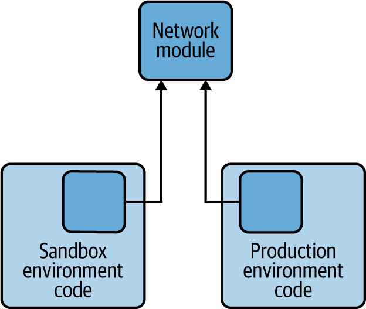
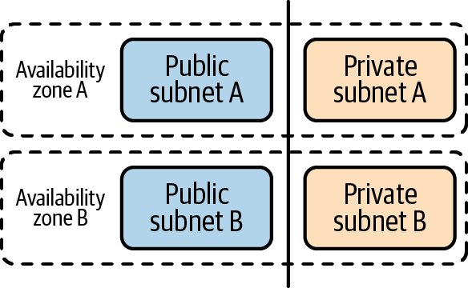

Trong chương trước, chúng ta đã xây dựng một pipeline CI/CD cho các thay đổi hạ tầng. Hạ tầng cho hệ thống microservices của chúng ta sẽ được định nghĩa bằng mã, và chúng ta sẽ có thể sử dụng pipeline đó để tự động hóa việc kiểm thử và triển khai phần mã này. Khi pipeline tự động đã sẵn sàng, chúng ta có thể bắt đầu viết phần mã sẽ định nghĩa hạ tầng cho ứng dụng dựa trên microservices của mình. Đó chính là nội dung chúng ta sẽ tập trung trong chương này.
Thiết lập đúng hạ tầng là yếu tố sống còn để khai thác tối đa hệ thống microservices của bạn. Microservices cho chúng ta một cách hay để chia nhỏ các phần của ứng dụng thành những mảnh vừa phải. Nhưng chúng ta sẽ cần rất nhiều hạ tầng hỗ trợ để những dịch vụ nhỏ đó có thể phối hợp với nhau một cách đúng đắn. Trước khi có thể xử lý các thách thức trong việc thiết kế và kỹ nghệ hóa chính các dịch vụ, chúng ta sẽ cần dành thời gian thiết lập một kiến trúc mạng và một kiến trúc triển khai để các dịch vụ sử dụng.
Đến cuối chương này, bạn sẽ xây dựng được một hạ tầng dựa trên đám mây được thiết kế để lưu trữ các microservices mà chúng ta sẽ xây dựng trong chương tiếp theo. Chúng ta sẽ bắt đầu bằng việc giới thiệu hạ tầng và các thành phần của nó.
Hạ tầng là tập hợp các thành phần cho phép chúng ta triển khai, quản lý và hỗ trợ một ứng dụng dựa trên microservices. Một hạ tầng có thể bao gồm rất nhiều phần: phần cứng, phần mềm, mạng và công cụ. Vì vậy, phạm vi các thành phần chúng ta cần thiết lập là khá lớn và đưa tất cả những phần đó vào vận hành là một nhiệm vụ không hề nhỏ.
May mắn là, khi các phương pháp tiếp cận microservices đã trưởng thành hơn, đã có sự bùng nổ của các công cụ và dịch vụ giúp công việc này trở nên dễ dàng hơn. Trong mô hình của chúng ta, chúng ta sẽ tận dụng các công cụ như vậy nhiều nhất có thể. Chúng ta cũng sẽ tập trung làm cho hạ tầng hoạt động với một nền tảng đám mây duy nhất (AWS) thay vì xây dựng một ứng dụng độc lập với nhà cung cấp đám mây để có thể “lift and shift” sang những nơi khác. Những quyết định này giúp chúng ta có thể định nghĩa một hạ tầng giàu tính năng trong phạm vi nhỏ gọn của một chương sách.
Nhưng đây vẫn là một thử thách lớn! Chúng ta sẽ bao quát nhiều chủ đề trong một số lượng trang khá ít. Điều đó có nghĩa là chúng ta sẽ phải đánh đổi ở một vài chỗ. Ví dụ, chúng ta sẽ không thể đi sâu vào bảo mật, kiểm soát vận hành, hay ghi log sự kiện và hỗ trợ. Thay vào đó, chúng ta sẽ tập trung vào việc thiết kế và viết mã Terraform để tạo ra một mạng hoạt động được, một dịch vụ Kubernetes được AWS quản lý, và một máy chủ GitOps theo hướng khai báo. Ba thành phần này sẽ cho chúng ta nền tảng cần thiết để triển khai các microservices ví dụ của mình.
Thiết kế mạng và Kubernetes là những chủ đề sâu và phức tạp, đòi hỏi nhiều thảo luận hơn mức chúng ta có thể dành cho chúng ở đây. Tin tốt là bạn không cần phải là chuyên gia về mạng hay Kubernetes để thiết lập môi trường microservices đầu tiên của mình. Nếu đây là những lĩnh vực mới với bạn, bạn có thể làm theo các hướng dẫn chúng tôi cung cấp để đưa các phần đó của hệ thống vào chạy trước, như một bước đầu tiên để học sâu hơn về chúng.
Hãy bắt đầu bằng một chuyến tham quan nhanh các thành phần chính của chúng ta, bắt đầu từ mạng.
Microservices cần chạy trên một mạng. Vì vậy, chúng ta cần bảo đảm rằng mình đã thiết lập một mạng phù hợp. Vì chúng ta đã quyết định lưu trữ các dịch vụ trên đám mây AWS, nên thiết kế mạng của chúng ta cần được điều chỉnh tương ứng, và chúng ta sẽ tạo một mạng ảo thay vì mạng vật lý. Chúng ta sẽ không cần bận tâm đến chi tiết của router vật lý, cáp hay thiết bị mạng. Thay vào đó, chúng ta cần học cách sử dụng ngôn ngữ của các tài nguyên mạng AWS và cấu hình chúng cho phù hợp.
Chúng ta sẽ giữ thiết kế mạng đơn giản nhất có thể. Chúng ta sẽ chỉ xây đúng mức cần thiết để hệ thống chạy được. Tuy nhiên, chúng ta vẫn cần xây dựng và cấu hình một vài tài nguyên cơ bản để hỗ trợ việc chạy các microservices trong tương lai:
Trong AWS, virtual private cloud (VPC) là đối tượng cha của một mạng ảo. Chúng ta sẽ tạo và cấu hình một VPC như một phần của thiết kế mạng.
Một VPC có thể được chia thành nhiều mạng nhỏ hơn gọi là subnet. Subnet cho chúng ta cách tổ chức lưu lượng mạng và kiểm soát quyền truy cập tới tài nguyên. Chúng ta sẽ tạo tổng cộng bốn subnet như một phần trong cấu hình mạng.
Ngoài việc tạo các đối tượng VPC và subnet, chúng ta cũng sẽ định nghĩa các đối tượng quy định cách lưu lượng có thể đi vào và đi ra khỏi chúng. Ví dụ, chúng ta sẽ định nghĩa hai subnet “private” chỉ chấp nhận lưu lượng từ bên trong VPC của chúng ta.
Như bạn có thể thấy, mạng của chúng ta có một mức độ phức tạp nhất định mà chúng ta sẽ phải xử lý, bao gồm quản lý bốn “subnet” và kết nối chúng với nhau. Động lực chính tạo ra độ phức tạp này đến từ nhu cầu của dịch vụ Kubernetes chạy ở phía trên nó. Vì vậy, tiếp theo hãy cùng xem qua thành phần đó.
Trong suốt cuốn sách này, chúng ta đã nhấn mạnh rằng việc giảm chi phí phối hợp là một yếu tố thành công quan trọng của hệ thống. Chúng ta cũng đã nhắc đến container và container hóa vài lần trong các chương trước. Đó là bởi container là một cách tuyệt vời để giúp các nhóm của chúng ta làm được nhiều việc hơn với ít chi phí phối hợp hơn. Container mang lại lợi thế là chạy ứng dụng trong một cấu hình hệ thống có thể dự đoán và biệt lập mà không phải gánh phần chi phí và công sức nặng nề như khi triển khai bằng VM. Microservices và container là một cặp rất tự nhiên.
Nếu bạn cần hiểu rõ hơn về container và container hóa, website của Docker có một phần giải thích nhập môn rất hay về container.
Container giúp chúng ta dễ dàng xây dựng các microservices chạy một cách ổn định qua nhiều môi trường như một đơn vị tự chứa. Nhưng container không biết tự khởi động, tự scale hay tự phục hồi khi gặp sự cố. Container hoạt động rất tốt khi đứng riêng lẻ, nhưng để quản lý chúng trong các môi trường gần với production vẫn cần rất nhiều công việc vận hành. Đó là lúc Kubernetes xuất hiện.
Kubernetes là một công cụ orchestration cho container do Google phát triển. Nó giải quyết bài toán làm việc với container ở quy mô lớn. Kubernetes cung cấp một giải pháp dựa trên công cụ để triển khai, scale, quan sát và quản lý các ứng dụng chạy trên container. Nó có thể giúp bạn triển khai và rollback các đợt triển khai container, tự động tạo hoặc hủy các đợt triển khai container dựa trên nhu cầu, mount hệ thống lưu trữ, quản lý secret, và hỗ trợ cân bằng tải cũng như quản lý lưu lượng. Kubernetes có thể làm rất nhiều công việc phức tạp và đã nhanh chóng trở thành một phần thiết yếu của stack hạ tầng microservices.
Tuy vậy, bản thân Kubernetes cũng khá phức tạp. Vì lý do đó, chúng ta sẽ không đi sâu vào chi tiết cách Kubernetes hoạt động trong cuốn sách này. Nhưng chúng ta vẫn sẽ có thể ghép lại một hạ tầng Kubernetes hoạt động được, được lưu trữ trên AWS.
Nếu bạn muốn tìm hiểu về Kubernetes, một phần nhập môn rất hay được trình bày trong Kubernetes: Up and Running của Brendan Burns, Joe Beda và Kelsey Hightower (O’Reilly).
Nếu bạn còn mới với Kubernetes, việc hiểu các thành phần chuyển động lớn trong một hệ thống Kubernetes là rất đáng giá, để bạn có thể theo dõi khi chúng ta thiết lập một hệ thống như vậy:
Cụm là đối tượng cha trong một hệ thống Kubernetes. Khi bạn cài Kubernetes, tức là bạn đang cài một cụm. Một cụm bao gồm control plane và một tập hợp các node.
Trong Kubernetes, control plane là “bộ não” của cụm. Nó quản lý hệ thống bằng cách đưa ra quyết định về việc khởi động, dừng và nhân bản container. Control plane cũng cung cấp một API mà chúng ta có thể dùng để quản trị cụm.
Phần công việc thực thi diễn ra ở các node. Mỗi node là một máy vật lý hoặc máy ảo chạy workload dựa trên container. Trong Kubernetes, node chạy pod. Mỗi pod chứa một hoặc nhiều container. Mỗi cụm đều có ít nhất một node.
Trong phần triển khai của chúng ta, chúng ta sẽ sử dụng một dịch vụ Kubernetes do AWS quản lý có tên là Elastic Kubernetes Service (EKS). Chúng ta dùng EKS vì nó xử lý giúp chúng ta phần lớn sự phức tạp của Kubernetes. Nó sẽ giúp chúng ta cấp phát cụm và cung cấp một control plane như một dịch vụ được quản lý. Việc chúng ta cần làm chỉ là cấu hình số lượng và loại node mình muốn, rồi cấp phát một mạng phù hợp.
Mảnh ghép cuối cùng của hạ tầng chúng ta là máy chủ triển khai GitOps. Hãy tìm hiểu thêm xem đó là gì và nó sẽ giúp ích cho chúng ta như thế nào.
Trong Chương 2, chúng ta đã giới thiệu nhóm phát hành. Đây là nhóm sẽ chịu trách nhiệm triển khai microservices vào production. Chúng ta kỳ vọng các nhóm microservices sẽ dùng pipeline CI/CD để tích hợp, kiểm thử, build và bàn giao dịch vụ của họ. Nhưng trong mô hình vận hành của chúng ta, họ không sở hữu việc triển khai thực tế dịch vụ vào hệ thống. Chúng ta đưa ra quyết định đó vì theo kinh nghiệm của mình, việc triển khai production khá phức tạp và cần sự chú ý đặc biệt. Để hỗ trợ công việc triển khai của nhóm phát hành, chúng ta đưa vào dịch vụ nền tảng của mình một công cụ đặc biệt: máy chủ triển khai GitOps.
Một trong những điều gây nhầm lẫn của CI/CD là phần “CD” có thể mang nghĩa Continuous Delivery hoặc Continuous Deployment, tùy theo bạn hỏi ai. Trong mô hình của chúng ta, Continuous Delivery (CD) của microservices xảy ra khi các nhóm có thể tự động và liên tục chuyển microservices hoàn thiện của họ thành container sẵn sàng giao đi. Deployment xảy ra khi các container này được nhóm phát hành đưa vào môi trường production.
Tên gọi GitOps, do một công ty tên WeaveWorks đặt ra, mô tả một cách làm việc sử dụng Git như một “nguồn chân lý.” Điều đó có nghĩa là bất cứ điều gì nằm trong Git đều phải là trạng thái đích của hệ thống. Giống như Terraform, GitOps theo đuổi cách tiếp cận khai báo. Công cụ GitOps cần thực hiện công việc đồng bộ cấu hình hệ thống sao cho giống với trạng thái được mô tả trong kho Git. Chúng cũng cần cảnh báo cho đội vận hành nếu thế giới thực đã bị lệch khỏi trạng thái được định nghĩa trong Git.
Argo CD là một công cụ GitOps hỗ trợ việc triển khai các ứng dụng Kubernetes. Chúng ta đã quyết định dùng Argo CD cho quy trình phát hành của mình vì chúng ta thích cách tiếp cận GitOps theo hướng khai báo. Nếu không dùng Argo CD, chúng ta sẽ phải tự động hóa một chuỗi lệnh gọi Kubernetes để triển khai ứng dụng. Thay vào đó, với cách tiếp cận GitOps, chúng ta chỉ cần trỏ Argo CD tới một nguồn Git và để nó tự đảm nhiệm việc giữ môi trường luôn cập nhật.
Ví dụ, một khi đã thiết lập Argo CD, chúng ta có thể để nó theo dõi một kho mã microservice. Khi có thay đổi mới được commit và kiểm thử, Argo CD có thể tự động triển khai phiên bản mới của dịch vụ vào môi trường. Năng lực triển khai liên tục theo hướng khai báo này khiến Argo CD trở thành một sản phẩm tuyệt vời cho các nhóm phát hành sử dụng.
Đến cuối chương này, chúng ta sẽ tạo ra một môi trường sandbox với một máy chủ Argo CD được cài trên một cụm Kubernetes do AWS quản lý, chạy trên mạng AWS VPC. Cần khá nhiều mã Terraform để làm điều đó, nên hãy chuẩn bị xắn tay áo lên. Chúng ta sẽ bắt đầu phần xây dựng trong mục tiếp theo.
Trong Chương 6, chúng ta đã quyết định sử dụng Terraform để viết mã định nghĩa hạ tầng và GitHub Actions để kiểm thử và áp dụng các thay đổi hạ tầng. Trong phần này, chúng ta sẽ chia thiết kế hạ tầng thành các module Terraform rời rạc và gọi chúng từ môi trường sandbox mà chúng ta đã bắt đầu xây dựng trong chương trước. Chúng ta sẽ bắt đầu bằng việc thiết lập các công cụ bạn cần trong không gian làm việc phát triển hạ tầng của mình.
Nếu bạn đã làm theo các hướng dẫn trong Chương 6, bạn đã có sẵn một môi trường để xây dựng hạ tầng. Vì vậy bạn sẽ có:
Một instance AWS và một tài khoản operator đã được cấu hình
Git, Terraform và các công cụ AWS CLI đã được cài trên máy làm việc của bạn
Một pipeline GitHub Actions cho hạ tầng
Nếu bạn vẫn chưa thiết lập pipeline GitHub Actions, hoặc bạn gặp khó khăn khi làm cho nó hoạt động theo cách chúng tôi mô tả, bạn có thể tạo một bản fork của môi trường sandbox cơ bản bằng cách làm theo hướng dẫn trong kho GitHub của cuốn sách này.
Ngoài phần thiết lập chúng ta đã làm ở chương trước, bạn cần thực hiện thêm một bước cài đặt nữa để sẵn sàng cho chương này: cài đặt kubectl. Khi cài đặt dịch vụ Kubernetes, chúng ta sẽ cần một cách để kiểm thử và tương tác với hệ thống Kubernetes. Để làm điều đó, chúng ta sẽ dùng ứng dụng dòng lệnh kubectl để tương tác với máy chủ Kubernetes.
Hãy làm theo hướng dẫn trong tài liệu Kubernetes để cài kubectl trên hệ thống cục bộ của bạn. Chúng tôi để bạn tự chọn biến thể phù hợp với hệ điều hành của mình.
Khi không gian làm việc đã được thiết lập và sẵn sàng, chúng ta có thể chuyển sang viết các module Terraform sẽ định nghĩa hạ tầng.
Khi viết phần mềm chuyên nghiệp, điều quan trọng là phải viết mã sạch và có tính chuyên nghiệp. Khi mã quá khó hiểu, khó bảo trì hoặc khó thay đổi, dự án sẽ trở nên tốn kém để vận hành và duy trì. Tất cả điều đó cũng đúng với mã hạ tầng của chúng ta.
Vì chúng ta đang theo đuổi cách tiếp cận IaC, chúng ta cần áp dụng các thực hành lập trình tốt cho dự án hạ tầng của mình. Tin tốt là ngành của chúng ta đã có rất nhiều hướng dẫn sẵn có về cách viết mã dễ học, dễ hiểu và dễ mở rộng hơn. Tin xấu là không phải nguyên tắc và thực hành nào từ phát triển phần mềm truyền thống cũng dễ áp dụng trong lĩnh vực IaC. Một phần là vì công cụ và ngôn ngữ cho IaC vẫn đang tiếp tục phát triển, và một phần là vì bối cảnh thay đổi một thiết bị vật lý đang hoạt động là một mô hình khác với phát triển phần mềm truyền thống.
Nhưng với Terraform, chúng ta sẽ có thể áp dụng ba thực hành lập trình cốt lõi giúp viết mã sạch và dễ bảo trì hơn:
Viết các hàm nhỏ làm tốt đúng một việc
Ẩn cấu trúc dữ liệu nội bộ và chi tiết cài đặt
Không lặp lại chính mình (DRY), cài đặt mã một lần và chỉ ở một nơi
Khả năng hỗ trợ module mã hạ tầng tích hợp sẵn của Terraform sẽ giúp chúng ta áp dụng cả ba thực hành này. Chúng ta sẽ có thể duy trì mã hạ tầng như một tập các module tái sử dụng và được đóng gói. Chúng ta sẽ xây module cho từng phần có ý nghĩa kiến trúc của hệ thống: mạng, API gateway và dịch vụ Kubernetes được Amazon quản lý (EKS). Khi đã có các module tái sử dụng đó, chúng ta có thể cài đặt một tập tệp Terraform khác dùng chúng. Chúng ta sẽ có thể có một tệp Terraform khác nhau cho mỗi môi trường cần tạo mà không phải lặp lại cùng một khai báo hạ tầng ở từng nơi (xem Hình 7-1).

Cách tiếp cận này cho phép chúng ta dễ dàng dựng các môi trường mới bằng cách tạo các tệp Terraform mới tái sử dụng các module đã phát triển. Nó cũng cho phép chúng ta thay đổi ở chỉ một nơi khi muốn điều chỉnh cấu hình hạ tầng trên tất cả các môi trường. Chúng ta có thể bắt đầu bằng cách tạo một module đơn giản định nghĩa một mạng cơ bản và một tệp môi trường sử dụng module đó.
Mã hạ tầng chúng ta viết trong chương này sử dụng cấu trúc module của Terraform. Mỗi module sẽ có thư mục riêng và chứa các tệp variables.tf, main.tf và output.tf. Ưu điểm của cách tiếp cận này là bạn có thể định nghĩa một module một lần và sử dụng nó theo cách có tham số để xây nhiều môi trường khác nhau. Bạn có thể tìm hiểu thêm về các module này trong tài liệu Terraform.
Chúng ta sẽ tạo hai module cho hạ tầng microservices của mình. Trước tiên, chúng ta sẽ tạo một module mạng AWS chứa cấu hình khai báo cho mạng định nghĩa bằng phần mềm của chúng ta. Chúng ta cũng sẽ tạo một module Kubernetes định nghĩa cấu hình Kubernetes được AWS quản lý cho các môi trường của mình. Chúng ta sẽ có thể dùng cả hai module này để tạo môi trường sandbox.
Chúng tôi đã cố gắng hết sức để thiết kế một hạ tầng phản ánh các môi trường production mà các tổ chức lớn sử dụng cho microservices. Nhưng giới hạn về số trang khiến chúng tôi không thể cung cấp cho bạn một bộ cấu hình đầy đủ có thể hoạt động cho môi trường, nhu cầu bảo mật và các ràng buộc cụ thể của bạn. Bạn có thể dùng chương này như một điểm khởi đầu nhanh và một hướng dẫn về các công cụ cần thiết, nhưng chúng tôi khuyên bạn nên dành thời gian thiết kế hạ tầng, cấu hình và kiến trúc ở mức production của riêng mình.
Trong Chương 6, chúng ta đã tạo một kho mã GitHub cho mã môi trường sandbox và pipeline CI/CD của nó. Chúng ta sẽ dùng kho mã đó trong chương này, nhưng cũng sẽ tạo một kho mới cho từng module mình viết. Terraform hỗ trợ sẵn việc nhập các module được quản lý như các kho GitHub, nên sẽ rất dễ kéo chúng vào khi muốn sử dụng.
Để bắt đầu, hãy tạo các kho lưu trữ cho tất cả các module mà chúng ta sẽ viết trong chương này. Hãy tạo ba kho GitHub công khai mới với tên được mô tả trong Bảng 7-1.
| Tên kho lưu trữ | Mức hiển thị | Mô tả |
|---|---|---|
module-aws-network |
Công khai |
Một module Terraform tạo mạng |
module-aws-kubernetes |
Công khai |
Một module Terraform thiết lập EKS |
module-argo-cd |
Công khai |
Một module Terraform cài Argo CD vào một cụm |
Nếu bạn chưa chắc cách tạo một kho GitHub, bạn có thể làm theo hướng dẫn của GitHub.
Chúng tôi khuyên bạn nên để các kho này ở chế độ công khai để việc nhập chúng vào định nghĩa môi trường Terraform dễ dàng hơn. Bạn vẫn có thể dùng kho riêng tư nếu muốn, chỉ cần bổ sung một ít thông tin xác thực vào lệnh import để Terraform có thể lấy đúng các tệp. Bạn cũng nên thêm một tệp .gitignore vào các kho này để tránh đẩy quá nhiều tệp làm việc của Terraform lên máy chủ GitHub. Bạn có thể làm việc đó bằng cách chọn một .gitignore cho Terraform trong giao diện web của GitHub, hoặc lưu nội dung thành một tệp .gitignore ở thư mục gốc của kho mã, như được mô tả trên trang GitHub này.
Khi ba kho module GitHub của chúng ta đã được tạo và sẵn sàng để điền nội dung, chúng ta có thể bắt đầu công việc thực sự là viết các định nghĩa hạ tầng thực tế, bắt đầu với mạng.
Mạng ảo là một phần nền tảng của hạ tầng chúng ta, nên việc bắt đầu bằng cách định nghĩa module mạng là hoàn toàn hợp lý. Trong phần này, chúng ta sẽ viết một module mạng AWS hỗ trợ một kiến trúc và workload Kubernetes cùng microservices cụ thể. Vì đây là một module, chúng ta sẽ viết mã đầu vào, phần chính và đầu ra, giống như khi viết input, logic và giá trị trả về cho một hàm ứng dụng. Khi hoàn thành, chúng ta sẽ có thể dùng module này để dễ dàng cấp phát một môi trường mạng chỉ bằng cách chỉ định một vài giá trị đầu vào.
Chúng ta sẽ viết mã hạ tầng mạng trong kho GitHub module-aws-network mà bạn đã tạo trước đó. Chúng ta sẽ tạo và chỉnh sửa các tệp Terraform trong thư mục gốc của module này. Nếu bạn chưa làm, hãy clone kho đó về môi trường cục bộ của mình và mở sẵn trình soạn thảo bạn yêu thích.
Một danh sách hoàn chỉnh cho module mạng AWS này có sẵn trong kho GitHub của cuốn sách này.
Hãy bắt đầu bằng cách định nghĩa các tài nguyên mà chúng ta kỳ vọng module mạng sẽ tạo ra. Chúng ta sẽ làm điều này bằng cách tạo một tệp Terraform tên là output.tf ở thư mục gốc của module-aws-network, như trong Ví dụ 7-1.
output "vpc_id" {
value = aws_vpc.main.id
}
output "subnet_ids" {
value = [
aws_subnet.public-subnet-a.id,
aws_subnet.public-subnet-b.id,
aws_subnet.private-subnet-a.id,
aws_subnet.private-subnet-b.id]
}
output "public_subnet_ids" {
value = [aws_subnet.public-subnet-a.id, aws_subnet.public-subnet-b.id]
}
output "private_subnet_ids" {
value = [aws_subnet.private-subnet-a.id, aws_subnet.private-subnet-b.id]
}Dựa trên tệp đầu ra của module Terraform, chúng ta có thể thấy module mạng tạo một tài nguyên VPC đại diện cho mạng định nghĩa bằng phần mềm của hệ thống. Bên trong mạng đó, module của chúng ta cũng sẽ tạo bốn subnet logic, đây là các phần bị giới hạn của mạng (hay mạng con). Hai trong số các subnet này sẽ là public, nghĩa là chúng sẽ có thể truy cập qua internet. Sau này, chúng ta sẽ dùng cả bốn subnet để thiết lập cụm Kubernetes, và cuối cùng chúng ta sẽ triển khai các microservices của mình vào đó.
Khi phần đầu ra của module đã được định nghĩa, chúng ta có thể bắt đầu ghép mã khai báo để xây nó và tạo ra các đầu ra như mong đợi. Trong một module Terraform, chúng ta sẽ tạo và chỉnh sửa một tệp tên là main.tf trong thư mục gốc của kho module-aws-network.
Để giúp bạn hiểu phần triển khai mạng, chúng tôi đã chia nhỏ tệp mã nguồn main.tf thành những phần nhỏ hơn. Bạn có thể tìm thấy toàn bộ danh sách mã nguồn cho module này tại trang GitHub của cuốn sách này.
Chúng ta sẽ bắt đầu phần triển khai module bằng cách tạo một tài nguyên AWS VPC. Terraform cung cấp sẵn cho chúng ta một tài nguyên chuyên biệt để định nghĩa AWS VPC, nên chúng ta chỉ cần điền vài tham số để tạo định nghĩa. Khi tạo một tài nguyên trong Terraform, chúng ta định nghĩa tham số và chi tiết cấu hình của nó bằng cú pháp Terraform. Khi áp dụng các thay đổi này, Terraform sẽ gọi AWS API và tạo tài nguyên nếu nó chưa tồn tại.
Bạn có thể tìm toàn bộ tài liệu Terraform cho AWS provider trên trang Terraform. Bạn cũng có thể tham khảo tài liệu này nếu đang xây một cách triển khai tương tự trên GCP hoặc Azure.
Hãy tạo một tệp tên là main.tf ở thư mục gốc của kho module mạng và thêm mã Terraform trong Ví dụ 7-2 vào tệp main.tf để định nghĩa một tài nguyên AWS VPC mới.
provider "aws" {
region = var.aws_region
}
locals {
vpc_name = "${var.env_name} ${var.vpc_name}"
cluster_name = "${var.cluster_name}-${var.env_name}"
}
## AWS VPC definition
resource "aws_vpc" "main" {
cidr_block = var.main_vpc_cidr
tags = {
"Name" = local.vpc_name,
"kubernetes.io/cluster/${local.cluster_name}" = "shared",
}
}Module mạng bắt đầu bằng một khai báo rằng nó đang sử dụng AWS provider. Đây là một chỉ thị đặc biệt cho Terraform biết rằng nó cần tải và cài các thư viện cần thiết để giao tiếp với AWS API và tạo tài nguyên thay mặt chúng ta. Khi chúng ta validate hoặc apply tệp này trong Terraform, nó sẽ cố gắng kết nối tới AWS API bằng các credential đã cấu hình trong hệ thống dưới dạng biến môi trường. Chúng ta cũng chỉ định một AWS region ở đây để Terraform biết nó phải làm việc trong region nào.
Chúng ta cũng đã chỉ định hai biến cục bộ bằng một khối Terraform locals. Các biến này định nghĩa một chuẩn đặt tên giúp chúng ta phân biệt các tài nguyên môi trường trong AWS console. Điều này đặc biệt quan trọng nếu chúng ta dự định tạo nhiều môi trường trong cùng một không gian tài khoản AWS, vì nó giúp tránh xung đột tên.
Sau phần khai báo biến cục bộ, bạn sẽ thấy mã tạo một AWS VPC mới. Như bạn thấy, phần này không có nhiều thứ, nhưng nó định nghĩa hai điều quan trọng: một khối CIDR và một tập các tag mô tả.
Classless inter-domain routing (CIDR) là một cách chuẩn để mô tả một dải địa chỉ IP cho mạng. Đây là một chuỗi rút gọn định nghĩa các địa chỉ IP nào được phép tồn tại bên trong một mạng hay subnet. Ví dụ, giá trị CIDR là 10.0.0.0/16 có nghĩa là bạn có thể bind tới bất kỳ địa chỉ IP nào từ 10.0.0.0 đến 10.0.255.255 bên trong VPC. Chúng ta sẽ định nghĩa cho bạn một dải CIDR khá chuẩn khi xây môi trường sandbox, nhưng nếu muốn biết chi tiết hơn CIDR hoạt động thế nào và vì sao nó tồn tại, bạn có thể đọc trong RFC.
Chúng ta cũng đã thêm một số giá trị tag cho VPC. Resource tag hữu ích vì chúng cho chúng ta một cách nhận diện nhóm tài nguyên dễ dàng khi cần quản trị chúng. Tag cũng hữu ích cho các tác vụ tự động và để xác định các tài nguyên cần được quản lý theo những cách cụ thể. Trong định nghĩa của mình, chúng ta định nghĩa một tag “Name” để VPC dễ nhận biết hơn. Chúng ta cũng định nghĩa một tag Kubernetes xác định cụm này là đích cho cụm Kubernetes của chúng ta (mà chúng ta sẽ định nghĩa trong “Định nghĩa cụm EKS”).
Ngoài ra, hãy lưu ý rằng trong một vài trường hợp, chúng ta tham chiếu tới một biến thay vì một giá trị thực trong cấu hình. Ví dụ, khối CIDR của chúng ta được định nghĩa là var.main_vpc_cidr và nó có tag Name với giá trị local.vpc_name. Đây là các biến Terraform, và chúng ta sẽ định nghĩa giá trị cho chúng sau này khi sử dụng module này như một phần của môi trường sandbox. Chính các biến này làm cho module có khả năng tái sử dụng; bằng cách thay đổi giá trị biến, chúng ta có thể thay đổi loại môi trường mình tạo ra.
Khi VPC chính đã được định nghĩa, chúng ta có thể chuyển sang cấu hình các subnet cho mạng. Như đã đề cập trước đó trong chương này, chúng ta sẽ dùng dịch vụ Kubernetes được Amazon quản lý (EKS) để chạy workload của mình. Để EKS hoạt động đúng cách, chúng ta cần có các subnet được định nghĩa trong hai “availability zone” khác nhau. Trong AWS, availability zone đại diện cho một trung tâm dữ liệu vật lý riêng biệt. Đây là một khái niệm hữu ích, vì mặc dù tài nguyên AWS là ảo, chúng vẫn chạy trên một máy tính nào đó đang cắm điện ở nơi đâu đó. Bằng cách dùng hai availability zone cho việc triển khai, chúng ta bảo đảm các dịch vụ vẫn hoạt động ngay cả khi một trung tâm dữ liệu gặp sự cố.
Ngoài việc cấu hình hai availability zone, Amazon cũng khuyến nghị một cấu hình VPC với cả subnet public và private. Vì vậy mạng của chúng ta sẽ có các subnet public cho phép lưu lượng từ internet và các subnet private chỉ cho phép lưu lượng từ bên trong VPC. Khi EKS đang chạy, nó sẽ triển khai các load balancer trong subnet public để quản lý lưu lượng vào, và lưu lượng đó sẽ được định tuyến tới các microservices chạy container của chúng ta trong các subnet private.
Để đáp ứng các yêu cầu đó, chúng ta sẽ định nghĩa tổng cộng bốn subnet. Hai trong số đó sẽ được chỉ định là subnet public, nên có thể truy cập qua web. Hai subnet còn lại sẽ là private. Chúng ta cũng sẽ tách các subnet public và private để chúng được triển khai ở các availability zone riêng biệt. Khi hoàn tất, chúng ta sẽ có một mạng trông như Hình 7-2.

Chúng ta đã chỉ định một CIDR cho dải IP trong VPC. Giờ chúng ta cần chia dải địa chỉ IP đó để các subnet sử dụng. Vì subnet nằm bên trong VPC, nên chúng phải có CIDR nằm trong ranh giới dải IP của VPC. Tuy nhiên, chúng ta sẽ không định nghĩa trực tiếp các địa chỉ IP đó trong module. Thay vào đó, chúng ta sẽ dùng biến giống như đã làm với VPC.
Ngoài các khối CIDR, chúng ta sẽ chỉ định availability zone cho các subnet như một tham số. Thay vì hardcode tên availability zone, chúng ta sẽ dùng một kiểu Terraform đặc biệt gọi là data, cho phép động chọn tên zone. Trong trường hợp này, chúng ta sẽ đặt public-subnet-a và private-subnet-a vào data.aws.availability_zones.available.names[0], còn public-subnet-b và private-subnet-b vào data.aws.availability_zones.available.names[1]. Việc dùng dữ liệu động như vậy giúp chúng ta dễ dàng dựng hạ tầng này ở các region khác nhau.
Cuối cùng, chúng ta sẽ thêm một tag tên để có thể dễ dàng tìm tài nguyên mạng của mình qua các console quản trị và vận hành. Chúng ta cũng cần thêm một số tag EKS vào tài nguyên subnet để dịch vụ Kubernetes của AWS biết chúng ta đang dùng subnet nào và chúng dùng cho mục đích gì. Chúng ta sẽ gắn cho các subnet public vai trò elb để EKS biết nó có thể dùng các subnet này để tạo và triển khai elastic load balancer. Chúng ta sẽ gắn cho các subnet private vai trò internal-elb để chỉ ra workload sẽ được triển khai vào đó và có thể được cân bằng tải. Để biết thêm chi tiết về cách AWS EKS dùng các tag cho load balancer, hãy xem tài liệu AWS.
Hãy thêm mã Terraform trong Ví dụ 7-3 vào cuối tệp main.tf để khai báo cấu hình subnet.
# subnet definition
data "aws_availability_zones" "available" {
state = "available"
}
resource "aws_subnet" "public-subnet-a" {
vpc_id = aws_vpc.main.id
cidr_block = var.public_subnet_a_cidr
availability_zone = data.aws_availability_zones.available.names[0]
tags = {
"Name" = (
"${local.vpc_name}-public-subnet-a"
)
"kubernetes.io/cluster/${local.cluster_name}" = "shared"
"kubernetes.io/role/elb" = "1"
}
}
resource "aws_subnet" "public-subnet-b" {
vpc_id = aws_vpc.main.id
cidr_block = var.public_subnet_b_cidr
availability_zone = data.aws_availability_zones.available.names[1]
tags = {
"Name" = (
"${local.vpc_name}-public-subnet-b"
)
"kubernetes.io/cluster/${local.cluster_name}" = "shared"
"kubernetes.io/role/elb" = "1"
}
}
resource "aws_subnet" "private-subnet-a" {
vpc_id = aws_vpc.main.id
cidr_block = var.private_subnet_a_cidr
availability_zone = data.aws_availability_zones.available.names[0]
tags = {
"Name" = (
"${local.vpc_name}-private-subnet-a"
)
"kubernetes.io/cluster/${local.cluster_name}" = "shared"
"kubernetes.io/role/internal-elb" = "1"
}
}
resource "aws_subnet" "private-subnet-b" {
vpc_id = aws_vpc.main.id
cidr_block = var.private_subnet_b_cidr
availability_zone = data.aws_availability_zones.available.names[1]
tags = {
"Name" = (
"${local.vpc_name}-private-subnet-b"
)
"kubernetes.io/cluster/${local.cluster_name}" = "shared"
"kubernetes.io/role/internal-elb" = "1"
}
}Trong Terraform, một phần tử data là cách truy vấn provider để lấy thông tin. Trong module mạng, chúng ta dùng phần tử dữ liệu aws_availability_zones để hỏi AWS về ID availability zone trong region đã chỉ định. Đây là một cách hay để tránh hardcode giá trị vào module.
Mặc dù chúng ta đã cấu hình bốn subnet và các dải IP của chúng, chúng ta vẫn chưa định nghĩa các quy tắc mạng mà AWS cần để quản lý lưu lượng đi qua chúng. Để hoàn thiện thiết kế mạng, chúng ta cần cài đặt một tập route table định nghĩa nguồn lưu lượng nào sẽ được phép đi vào subnet. Ví dụ, chúng ta cần thiết lập cách lưu lượng được định tuyến qua các subnet public và cách mỗi subnet được phép giao tiếp với nhau.
Chúng ta sẽ bắt đầu bằng cách định nghĩa các quy tắc định tuyến cho hai subnet public: public-subnet-a và public-subnet-b. Để làm cho các subnet này có thể truy cập từ internet, chúng ta cần thêm một tài nguyên đặc biệt vào VPC gọi là internet gateway. Đây là một thành phần mạng AWS kết nối đám mây riêng của chúng ta với internet công cộng. Terraform cung cấp cho chúng ta một định nghĩa tài nguyên cho gateway đó, vì vậy chúng ta sẽ dùng nó và gắn nó với VPC bằng tham số cấu hình vpc_id.
Khi đã thêm internet gateway, chúng ta cần định nghĩa các quy tắc định tuyến cho AWS biết cách điều hướng lưu lượng từ gateway vào các subnet của chúng ta. Để làm điều đó, chúng ta sẽ tạo một tài nguyên aws_route_table cho phép toàn bộ lưu lượng từ internet (được chúng ta nhận diện bằng khối CIDR 0.0.0/0) đi qua gateway. Sau đó, chúng ta chỉ cần tạo các association giữa hai subnet public với bảng mà mình đã định nghĩa.
Hãy thêm mã Terraform trong Ví dụ 7-4 vào main.tf để định nghĩa chỉ dẫn định tuyến cho mạng của chúng ta.
# Internet gateway and routing tables for public subnets
resource "aws_internet_gateway" "igw" {
vpc_id = aws_vpc.main.id
tags = {
Name = "${local.vpc_name}-igw"
}
}
resource "aws_route_table" "public-route" {
vpc_id = aws_vpc.main.id
route {
cidr_block = "0.0.0.0/0"
gateway_id = aws_internet_gateway.igw.id
}
tags = {
"Name" = "${local.vpc_name}-public-route"
}
}
resource "aws_route_table_association" "public-a-association" {
subnet_id = aws_subnet.public-subnet-a.id
route_table_id = aws_route_table.public-route.id
}
resource "aws_route_table_association" "public-b-association" {
subnet_id = aws_subnet.public-subnet-b.id
route_table_id = aws_route_table.public-route.id
}Khi route cho các subnet public đã được định nghĩa, chúng ta có thể đi sâu hơn vào việc thiết lập hai subnet private. Cấu hình route cho subnet private sẽ phức tạp hơn một chút so với những gì chúng ta đã làm đến lúc này. Lý do là chúng ta cần định nghĩa một route từ subnet private đi ra internet để cho phép các Kubernetes Pod trao đổi với dịch vụ EKS.
Để kiểu route đó hoạt động, chúng ta cần một cách để các node trong subnet private nói chuyện được với internet gateway đã triển khai trong các subnet public. Trong AWS, chúng ta sẽ cần tạo một tài nguyên network address translation (NAT) gateway để cung cấp đường đi ra ngoài. Khi tạo NAT, chúng ta cũng sẽ cần gán cho nó một loại địa chỉ IP đặc biệt gọi là elastic IP address (hay EIP). Vì đây là một cấu trúc của AWS, IP này là một địa chỉ mạng thực có thể truy cập từ internet, không giống các địa chỉ khác trong mạng của chúng ta vốn là địa chỉ ảo chỉ tồn tại bên trong AWS. Do số lượng địa chỉ IP thực là có hạn, AWS giới hạn số lượng cấp phát. Không may là chúng ta không thể tạo NAT nếu thiếu một địa chỉ như vậy, nên chúng ta sẽ phải dùng hai địa chỉ, một cho mỗi NAT mà mình tạo.
Hãy thêm mã Terraform trong Ví dụ 7-5 để cài một NAT gateway trong mạng.
resource "aws_eip" "nat-a" {
vpc = true
tags = {
"Name" = "${local.vpc_name}-NAT-a"
}
}
resource "aws_eip" "nat-b" {
vpc = true
tags = {
"Name" = "${local.vpc_name}-NAT-b"
}
}
resource "aws_nat_gateway" "nat-gw-a" {
allocation_id = aws_eip.nat-a.id
subnet_id = aws_subnet.public-subnet-a.id
depends_on = [aws_internet_gateway.igw]
tags = {
"Name" = "${local.vpc_name}-NAT-gw-a"
}
}
resource "aws_nat_gateway" "nat-gw-b" {
allocation_id = aws_eip.nat-b.id
subnet_id = aws_subnet.public-subnet-b.id
depends_on = [aws_internet_gateway.igw]
tags = {
"Name" = "${local.vpc_name}-NAT-gw-b"
}
}Ngoài NAT gateway mà chúng ta vừa tạo, chúng ta còn cần định nghĩa route cho các subnet private. Hãy thêm mã Terraform trong Ví dụ 7-6 vào main.tf để hoàn thiện định nghĩa route của mạng.
resource "aws_route_table" "private-route-a" {
vpc_id = aws_vpc.main.id
route {
cidr_block = "0.0.0.0/0"
nat_gateway_id = aws_nat_gateway.nat-gw-a.id
}
tags = {
"Name" = "${local.vpc_name}-private-route-a"
}
}
resource "aws_route_table" "private-route-b" {
vpc_id = aws_vpc.main.id
route {
cidr_block = "0.0.0.0/0"
nat_gateway_id = aws_nat_gateway.nat-gw-b.id
}
tags = {
"Name" = "${local.vpc_name}-private-route-b"
}
}
resource "aws_route_table_association" "private-a-association" {
subnet_id = aws_subnet.private-subnet-a.id
route_table_id = aws_route_table.private-route-a.id
}
resource "aws_route_table_association" "private-b-association" {
subnet_id = aws_subnet.private-subnet-b.id
route_table_id = aws_route_table.private-route-b.id
}Như vậy là xong phần định nghĩa mạng chính của chúng ta. Khi chạy tệp Terraform này, chúng ta sẽ có một mạng AWS định nghĩa bằng phần mềm sẵn sàng cho Kubernetes và microservices. Tuy nhiên, trước khi có thể sử dụng nó, chúng ta cần định nghĩa toàn bộ biến đầu vào mà module này cần. Dù chúng ta đã tham chiếu khá nhiều giá trị var trong mã, các module Terraform yêu cầu chúng ta phải khai báo toàn bộ biến đầu vào được dùng trong một tệp cụ thể tên là variables.tf. Nếu không làm điều đó, chúng ta sẽ không thể truyền giá trị biến vào module.
Hãy tạo một tệp trong thư mục gốc của module mạng tên là variables.tf. Thêm mã Terraform trong Ví dụ 7-7 vào variables.tf để định nghĩa các đầu vào cho module.
variable "env_name" {
type = string
}
variable "aws_region" {
type = string
}
variable "vpc_name" {
type = string
default = "ms-up-running"
}
variable "main_vpc_cidr" {
type = string
}
variable "public_subnet_a_cidr" {
type = string
}
variable "public_subnet_b_cidr" {
type = string
}
variable "private_subnet_a_cidr" {
type = string
}
variable "private_subnet_b_cidr" {
type = string
}
variable "cluster_name" {
type = string
}Như bạn thấy, các định nghĩa biến khá dễ hiểu. Chúng mô tả một tên, phần mô tả tùy chọn và một giá trị kiểu dữ liệu. Trong module này, chúng ta chỉ dùng các giá trị kiểu chuỗi. Trong một số trường hợp, chúng ta cũng cung cấp giá trị mặc định để các đầu vào đó không phải lúc nào cũng cần được định nghĩa cho mọi môi trường. Chúng ta sẽ cung cấp cho module các giá trị biến này khi dùng nó để tạo môi trường.
Thông lệ tốt là thêm thuộc tính mô tả cho mọi biến trong module Terraform của bạn. Điều này cải thiện khả năng bảo trì và tính dễ dùng của module, và ngày càng quan trọng hơn theo thời gian. Chúng tôi đã làm điều này trong các tệp Terraform công bố trên GitHub, nhưng đã bỏ phần mô tả trong các ví dụ ở sách để tiết kiệm chỗ.
Mã Terraform cho module mạng của chúng ta giờ đã hoàn tất. Tại thời điểm này, bạn sẽ có một danh sách tệp trông gần như sau trong thư mục module:
drwxr-xr-x 3 msur staff 96 14 Jun 09:57 .. drwxr-xr-x 7 msur staff 224 14 Jun 09:58 . -rw-r--r-- 1 msur staff 23 14 Jun 09:57 README.md drwxr-xr-x 13 msur staff 416 14 Jun 09:57 .git -rw-r--r-- 1 msur staff 0 14 Jun 09:58 main.tf -rw-r--r-- 1 msur staff 612 14 Jun 09:58 variables.tf -rw-r--r-- 1 msur staff 72 14 Jun 09:58 outputs.tf
Khi mã đã được viết xong, chúng ta sẽ kiểm thử module mạng bằng cách tạo một mạng môi trường sandbox, nhưng trước khi dùng module, chúng ta nên chắc chắn rằng mình không mắc lỗi cú pháp. Ứng dụng dòng lệnh Terraform có một vài tính năng hữu ích để format và validate mã. Nếu bạn chưa cài Terraform client trên hệ thống cục bộ, bạn có thể tìm bản nhị phân cho hệ điều hành của mình trên trang Terraform.
Hãy dùng lệnh Terraform sau khi đang ở thư mục làm việc của module để format mã của module:
module-aws-network$ terraform fmt
Lệnh fmt sẽ lint, hay format, toàn bộ mã Terraform trong thư mục làm việc và bảo đảm nó tuân theo một bộ hướng dẫn phong cách tích hợp sẵn. Nó sẽ tự động thực hiện các thay đổi này cho bạn và liệt kê những tệp đã được cập nhật.
Tiếp theo, hãy chạy terraform init để Terraform cài các thư viện AWS provider. Chúng ta cần làm vậy để có thể validate mã. Lưu ý rằng bạn cần có AWS credential được định nghĩa sẵn để việc này hoạt động. Nếu bạn chưa làm điều đó, hãy làm theo hướng dẫn ở chương trước:
module-aws-network$ terraform init
Nếu gặp vấn đề, hãy cố gắng khắc phục chúng trước khi tiếp tục; tài liệu Terraform có một mục xử lý sự cố rất hữu ích.
Cuối cùng, bạn có thể chạy lệnh validate để bảo đảm module của chúng ta đúng về mặt cú pháp:
module-aws-network$ terraform validate Success! The configuration is valid.
Nếu bạn cần debug mã Terraform, bạn có thể đặt biến môi trường TF_LOG thành INFO hoặc DEBUG. Việc đó sẽ yêu cầu Terraform phát ra thông tin log ra standard output.
Khi bạn đã hài lòng rằng mã đã được format và hợp lệ, bạn có thể commit các thay đổi vào kho GitHub. Nếu bạn đang làm việc trong một kho cục bộ, bạn có thể dùng lệnh sau để đẩy thay đổi lên kho chính:
module-aws-network$ git add . module-aws-network$ git commit -m "network module created" [master ddb7e41] network module created 3 files changed, 226 insertions(+) module-aws-network$ git push
Module mạng dựa trên Terraform của chúng ta giờ đã hoàn tất và sẵn sàng để dùng. Nó có một tệp variables.tf mô tả các biến đầu vào bắt buộc và tùy chọn để sử dụng nó. Nó có một tệp main.tf định nghĩa theo hướng khai báo các tài nguyên cho thiết kế mạng của chúng ta. Cuối cùng, nó có một tệp outputs.tf định nghĩa các tài nguyên quan trọng mà chúng ta đã tạo trong module. Giờ chúng ta có thể dùng module để tạo một mạng thực trong môi trường sandbox của mình.
Điều hay ho của việc dùng module Terraform là chúng ta có thể tạo môi trường một cách dễ dàng và lặp lại được. Ngoài các giá trị cụ thể đã định nghĩa trong tệp variables.tf, bất kỳ môi trường nào được tạo bằng module này đều sẽ vận hành với một hạ tầng mạng mà chúng ta hiểu rõ. Điều đó có nghĩa là chúng ta có thể kỳ vọng microservices hoạt động theo cách có thể dự đoán khi di chuyển qua các môi trường kiểm thử và phát hành, vì chúng ta đã giảm mức độ biến thiên.
Nhưng để áp dụng module đã định nghĩa và tạo một môi trường mới, chúng ta cần gọi nó từ một tệp Terraform định nghĩa giá trị cho các biến của module. Để làm điều đó, chúng ta sẽ tạo một môi trường sandbox minh họa ví dụ thực tế về cách dùng module Terraform. Nếu bạn đã làm theo các bước trong Chương 6, bạn sẽ có sẵn một kho mã cho môi trường sandbox với một tệp main.tf duy nhất trong đó.
Để dùng module mạng mà chúng ta đã tạo, chúng ta sẽ dùng một tài nguyên Terraform đặc biệt gọi là module. Nó cho phép chúng ta tham chiếu tới một module Terraform đã tạo và truyền vào các giá trị cho những biến đã được định nghĩa. Terraform kỳ vọng module có một thuộc tính tên là source để chỉ ra nơi nó có thể tìm thấy mã.
Trong trường hợp của chúng ta, Terraform cần lấy module mạng từ một kho GitHub. Để làm điều đó, chúng ta cần dùng một thuộc tính source bắt đầu bằng chuỗi "github.com" và chứa đường dẫn của kho. Điều đó cho Terraform biết rằng nó cần kéo mã nguồn từ GitHub.
Ví dụ, giá trị source là "github.com/implementing-microservices/module-aws-network" tham chiếu tới module mạng ví dụ của chúng tôi. Bạn có thể tìm đường dẫn cho kho module của mình bằng cách sao chép đường dẫn từ URL GitHub của nó (xem Bảng 7-2).
| Tên | Mô tả | Ví dụ |
|---|---|---|
|
Đường dẫn tới kho module của bạn trên GitHub |
github.com/implementing-microservices/module-aws-network |
Khi đã có đường dẫn tới module mạng, hãy mở tệp main.tf của môi trường sandbox mà bạn đã tạo trong Chương 6. Thêm mã Terraform trong Ví dụ 7-8 sau chú thích # Network Configuration. Đừng quên thay giá trị source bằng đường dẫn tới kho GitHub của module mạng của bạn.
...
# Network Configuration
module "aws-network" {
source = "github.com/{YOUR_NETWORK_MODULE_REPO_PATH}"
env_name = local.env_name
vpc_name = "msur-VPC"
cluster_name = local.k8s_cluster_name
aws_region = local.aws_region
main_vpc_cidr = "10.10.0.0/16"
public_subnet_a_cidr = "10.10.0.0/18"
public_subnet_b_cidr = "10.10.64.0/18"
private_subnet_a_cidr = "10.10.128.0/18"
private_subnet_b_cidr = "10.10.192.0/18"
}
# EKS Configuration
# GitOps Configuration
Tên bucket S3 của Amazon phải duy nhất trên toàn cầu, nên bạn sẽ cần thay giá trị bucket thành một tên vừa duy nhất vừa có ý nghĩa với bạn. Hãy tham khảo “Tạo Backend S3 cho Terraform” để biết cách thiết lập backend. Nếu bạn muốn thử nhanh cho có, hãy bỏ phần định nghĩa backend và Terraform sẽ lưu state cục bộ trong hệ thống tệp của bạn.
Pipeline hạ tầng của chúng ta sẽ áp dụng các thay đổi Terraform, nhưng trước khi kích hoạt nó, chúng ta cần kiểm tra để chắc chắn rằng mã Terraform đã viết sẽ hoạt động. Một bước khởi đầu tốt là format và validate mã cục bộ:
$ terraform fmt [...] $ terraform init [...] $ terraform validate Success! The configuration is valid.
Nếu bạn cần debug module mạng và phải thay đổi mã, có thể bạn sẽ cần chạy lệnh sau trong thư mục môi trường sandbox của mình:
$ terraform get -update
Lệnh này sẽ yêu cầu Terraform kéo phiên bản mới nhất của module mạng từ GitHub.
Nếu mã hợp lệ, chúng ta có thể lấy một bản plan để xác nhận các thay đổi Terraform sẽ thực hiện khi được áp dụng. Luôn là một ý hay khi dry run và kiểm tra các thay đổi trước khi thực sự thay đổi môi trường, vì vậy hãy biến bước này thành một phần trong quy trình làm việc của bạn. Để lấy Terraform plan, hãy chạy lệnh sau:
$ terraform plan
Terraform sẽ cung cấp cho bạn danh sách các tài nguyên sẽ được tạo, xóa và cập nhật. Nếu Terraform và AWS còn mới với bạn, plan có thể hơi khó đánh giá và hiểu tường tận. Nhưng bạn vẫn sẽ có thể cảm nhận được tổng quát điều gì sắp xảy ra. Vì đây là lần cập nhật đầu tiên, plan sẽ liệt kê khá nhiều tài nguyên mới mà Terraform sẽ tạo. Khi đã sẵn sàng, bạn có thể đẩy mã lên kho GitHub và gắn tag để phát hành:
$ git add . $ git commit -m "initial network release" $ git push origin $ git tag -a v1.0 -m "network build" $ git push origin v1.0
Có hai lệnh git push mà chúng ta cần chạy. Lệnh đầu tiên đẩy các thay đổi mã đã thực hiện, còn lệnh thứ hai chỉ đẩy tag.
Khi mã đã được gắn tag và đẩy lên, pipeline GitHub Actions của chúng ta sẽ tiếp quản và bắt đầu xây dựng mạng cho môi trường sandbox. Bạn sẽ cần đăng nhập GitHub và kiểm tra tab Actions trong kho môi trường sandbox để bảo đảm mọi thứ diễn ra đúng như kế hoạch. Nếu bạn không nhớ cách làm, bạn sẽ tìm thấy hướng dẫn trong Chương 6.
Bạn có thể kiểm tra xem VPC đã được tạo thành công hay chưa bằng một lệnh gọi AWS CLI. Hãy chạy lệnh sau để liệt kê các VPC có khối CIDR trùng với giá trị đã định nghĩa:
$ aws ec2 describe-vpcs --filters Name=cidr,Values=10.10.0.0/16
Bạn sẽ nhận được một body JSON mô tả VPC mà chúng ta đã tạo. Nếu điều đó xảy ra, nó cho thấy hiện bạn đã có một mạng AWS đang chạy và sẵn sàng sử dụng. Đã đến lúc bắt đầu viết module cho dịch vụ Kubernetes.
Một trong những phần quan trọng nhất của hạ tầng microservices là lớp Kubernetes điều phối các dịch vụ chạy trên container. Nếu thiết lập đúng, Kubernetes sẽ cung cấp cho chúng ta một giải pháp tự động cho tính đàn hồi, khả năng scale và khả năng chịu lỗi. Nó cũng mang lại một nền tảng tuyệt vời để triển khai dịch vụ một cách đáng tin cậy. Trên tất cả điều đó, service mesh Istio mang lại cho chúng ta một cách mạnh mẽ để quản lý lưu lượng và cải thiện cách các microservices giao tiếp với nhau.
Để xây module Kubernetes, chúng ta sẽ làm theo cùng các bước đã dùng cho module mạng. Chúng ta sẽ bắt đầu bằng việc định nghĩa một tập biến đầu ra mô tả module sẽ tạo ra gì, sau đó viết mã định nghĩa theo hướng khai báo cấu hình mà Terraform sẽ tạo, và cuối cùng là định nghĩa các đầu vào. Như đã nhắc trước đó trong chương này, chúng ta quản lý từng module hạ tầng trong kho mã GitHub riêng của nó. Vì vậy hãy chắc rằng bạn bắt đầu bằng cách tạo một kho GitHub mới cho module Kubernetes nếu chưa làm.
Triển khai Kubernetes có thể trở nên rất phức tạp. Vì thế, để đưa hệ thống vào chạy nhanh nhất có thể, chúng ta sẽ dùng một dịch vụ được quản lý giúp che bớt phần phức tạp trong thiết lập và quản lý. Vì trong các ví dụ này chúng ta chạy trên AWS, chúng ta sẽ dùng EKS đi kèm trong dịch vụ đám mây của Amazon.
Cấu hình cho các dịch vụ Kubernetes được quản lý thường rất đặc thù theo nhà cung cấp, vì vậy các ví dụ ở đây có thể sẽ cần chỉnh sửa đáng kể nếu bạn muốn dùng chúng trên Google Cloud, Azure hay một dịch vụ được lưu trữ khác.
Một cụm EKS gồm hai phần: một control plane chạy phần mềm hệ thống Kubernetes, và một node group chứa các VM mà microservices của chúng ta sẽ chạy trên đó. Để cấu hình EKS, chúng ta cần cung cấp tham số cho cả hai khu vực này. Khi module chạy xong, chúng ta có thể trả về một định danh cụm EKS để có tùy chọn kiểm tra hoặc bổ sung thêm vào cụm bằng các module khác.
Với tất cả những điều đó trong đầu, hãy đi vào phần mã sẽ khiến nó hoạt động. Chúng ta sẽ làm việc trong kho GitHub module-aws-kubernetes mà bạn đã tạo trước đó, nên hãy bắt đầu bằng cách clone nó về máy cục bộ. Khi đã xong, chúng ta có thể bắt đầu bằng việc chỉnh sửa tệp đầu ra của Terraform.
Một danh sách hoàn chỉnh cho module Kubernetes này có sẵn trong kho GitHub của cuốn sách này.
Chúng ta sẽ bắt đầu bằng cách khai báo các đầu ra mà module của chúng ta cung cấp. Hãy tạo một tệp Terraform tên là outputs.tf trong thư mục gốc của kho module-aws-kubernets và thêm vào đó mã trong Ví dụ 7-9.
output "eks_cluster_id" {
value = aws_eks_cluster.ms-up-running.id
}
output "eks_cluster_name" {
value = aws_eks_cluster.ms-up-running.name
}
output "eks_cluster_certificate_data" {
value = aws_eks_cluster.ms-up-running.certificate_authority.0.data
}
output "eks_cluster_endpoint" {
value = aws_eks_cluster.ms-up-running.endpoint
}
output "eks_cluster_nodegroup_id" {
value = aws_eks_node_group.ms-node-group.id
}Giá trị chính mà chúng ta trả về là định danh cho cụm EKS mà module này sẽ tạo. Phần còn lại của các giá trị cần được trả về để chúng ta có thể truy cập cụm từ các module khác sau khi cụm đã sẵn sàng và hoạt động. Ví dụ, chúng ta sẽ cần endpoint và dữ liệu chứng chỉ khi cài máy chủ Argo CD vào cụm EKS này ở cuối chương.
Dù đầu ra của module khá đơn giản, công việc thiết lập hệ thống Kubernetes dựa trên EKS của chúng ta sẽ phức tạp hơn một chút. Cũng như trước đó, chúng ta sẽ xây tệp Terraform chính của module theo từng phần trước khi kiểm thử và áp dụng nó.
Để bắt đầu, hãy tạo một tệp Terraform tên là main.tf trong thư mục gốc của module Kubernetes và thêm định nghĩa AWS provider như trong Ví dụ 7-10.
provider "aws" {
region = var.aws_region
}Hãy nhớ rằng chúng ta sẽ dùng quy ước đặt tên Terraform là var để biểu thị các giá trị có thể được thay thế bằng biến khi module được gọi.
Như đã đề cập trước đó, chúng ta sẽ dùng EKS của Amazon để tạo và quản lý bản cài Kubernetes của mình. Nhưng để chạy được, EKS cần tạo và chỉnh sửa các tài nguyên AWS thay mặt chúng ta. Vì vậy, chúng ta cần thiết lập quyền trong tài khoản AWS để nó có thể thực hiện công việc cần thiết. Chúng ta cần định nghĩa policy và quy tắc bảo mật ở cấp cụm tổng thể và cả cho các VM hoặc node mà EKS sẽ spin up để chạy microservices cho chúng ta.
Chúng ta sẽ bắt đầu bằng cách tập trung vào các quy tắc và policy cho toàn bộ cụm EKS. Hãy thêm mã Terraform trong Ví dụ 7-11 vào tệp main.tf để định nghĩa một policy quản lý quyền truy cập cụm mới.
locals {
cluster_name = "${var.cluster_name}-${var.env_name}"
}
resource "aws_iam_role" "ms-cluster" {
name = local.cluster_name
assume_role_policy = <<POLICY
{
"Version": "2012-10-17",
"Statement": [
{
"Effect": "Allow",
"Principal": {
"Service": "eks.amazonaws.com"
},
"Action": "sts:AssumeRole"
}
]
}
POLICY
}
resource "aws_iam_role_policy_attachment" "ms-cluster-AmazonEKSClusterPolicy" {
policy_arn = "arn:aws:iam::aws:policy/AmazonEKSClusterPolicy"
role = aws_iam_role.ms-cluster.name
}Đoạn mã này thiết lập một trust policy cho phép dịch vụ AWS EKS hành động thay mặt bạn. Nó định nghĩa một vai trò identity and access management mới cho dịch vụ EKS của chúng ta và gắn vào đó một policy tên là AmazonEKSClusterPolicy. Policy này do AWS định nghĩa sẵn và cấp cho EKS các quyền cần thiết để tạo VM và thay đổi mạng trong quá trình quản lý Kubernetes. Hãy để ý rằng chúng ta cũng đang định nghĩa và dùng một biến cục bộ cho tên cụm. Chúng ta sẽ dùng biến đó xuyên suốt module.
Khi vai trò và policy của dịch vụ cụm đã được định nghĩa, hãy thêm mã trong Ví dụ 7-12 vào tệp main.tf của module để định nghĩa một policy bảo mật mạng cho cụm.
resource "aws_security_group" "ms-cluster" {
name = local.cluster
vpc_id = var.vpc_id
egress {
from_port = 0
to_port = 0
protocol = "-1"
cidr_blocks = ["0.0.0.0/0"]
}
tags = {
Name = "ms-up-running"
}
}Một security group của VPC sẽ giới hạn loại lưu lượng có thể đi vào và đi ra mạng. Mã Terraform chúng ta vừa viết định nghĩa một quy tắc egress cho phép toàn bộ lưu lượng đi ra không bị hạn chế, nhưng không cho phép bất kỳ lưu lượng đi vào nào vì không có quy tắc ingress nào được định nghĩa. Hãy để ý rằng chúng ta đang áp dụng security group này cho một VPC sẽ được định nghĩa bằng biến đầu vào. Khi dùng module này, chúng ta có thể truyền vào ID của VPC mà module mạng đã tạo.
Khi các policy này và một security group cho cụm EKS đã được định nghĩa, giờ chúng ta có thể thêm khai báo cho chính cụm vào tệp Terraform main.tf (xem Ví dụ 7-13).
resource "aws_eks_cluster" "ms-up-running" {
name = local.cluster_name
role_arn = aws_iam_role.ms-cluster.arn
vpc_config {
security_group_ids = [aws_security_group.ms-cluster.id]
subnet_ids = var.cluster_subnet_ids
}
depends_on = [
aws_iam_role_policy_attachment.ms-cluster-AmazonEKSClusterPolicy
]
}Khai báo cụm EKS mà chúng ta vừa tạo khá đơn giản. Nó chỉ tham chiếu tới tên, vai trò, policy và giá trị security group đã định nghĩa trước đó. Nó cũng tham chiếu tới một tập subnet mà cụm sẽ quản lý. Các subnet này chính là những subnet chúng ta đã tạo trước đó trong module mạng, và chúng ta sẽ có thể truyền chúng vào module Kubernetes này như một biến.
Khi AWS tạo một cụm EKS, nó tự động thiết lập toàn bộ các thành phần quản lý mà chúng ta cần để chạy cụm Kubernetes. Đây được gọi là control plane vì nó là bộ não của hệ thống Kubernetes. Nhưng ngoài control plane, microservices của chúng ta cần một nơi để chạy. Trong Kubernetes, điều đó có nghĩa là chúng ta cần thiết lập các node, tức là máy vật lý hoặc VM có thể chạy workload được container hóa.
Một trong những lợi thế của việc dùng dịch vụ Kubernetes được quản lý như EKS là chúng ta có thể chuyển bớt một phần công việc quản lý việc tạo, gỡ bỏ và cập nhật các node Kubernetes. Với cấu hình của mình, chúng ta sẽ định nghĩa một managed EKS node group và để AWS tự cấp phát tài nguyên và tương tác với hệ thống Kubernetes thay cho chúng ta. Nhưng để có một managed node group chạy được, chúng ta vẫn cần định nghĩa một vài giá trị cấu hình quan trọng.
Giống như đã làm với cụm, chúng ta sẽ bắt đầu cấu hình node bằng cách định nghĩa một vai trò và một số policy bảo mật. Hãy thêm các định nghĩa IAM cho node group trong Ví dụ 7-14 vào tệp main.tf của module Kubernetes.
# Node Role
resource "aws_iam_role" "ms-node" {
name = "${local.cluster_name}.node"
assume_role_policy = <<POLICY
{
"Version": "2012-10-17",
"Statement": [
{
"Effect": "Allow",
"Principal": {
"Service": "ec2.amazonaws.com"
},
"Action": "sts:AssumeRole"
}
]
}
POLICY
}
# Node Policy
resource "aws_iam_role_policy_attachment" "ms-node-AmazonEKSWorkerNodePolicy" {
policy_arn = "arn:aws:iam::aws:policy/AmazonEKSWorkerNodePolicy"
role = aws_iam_role.ms-node.name
}
resource "aws_iam_role_policy_attachment" "ms-node-AmazonEKS_CNI_Policy" {
policy_arn = "arn:aws:iam::aws:policy/AmazonEKS_CNI_Policy"
role = aws_iam_role.ms-node.name
}
[...]
resource "aws_iam_role_policy_attachment" "ms-node-ContainerRegistryReadOnly" {
[...]
policy_arn = "arn:aws:iam::aws:policy/AmazonEC2ContainerRegistryReadOnly"
role = aws_iam_role.ms-node.name
}Vai trò và các policy trong đoạn Terraform này sẽ cho phép mọi node được tạo ra có thể giao tiếp với container registry và dịch vụ VM của Amazon. Chúng ta cần các policy này vì node trong hệ thống Kubernetes sẽ cần có khả năng cấp phát tài nguyên tính toán và truy cập container để chạy dịch vụ. Để biết thêm chi tiết về vai trò IAM cho EKS worker node, hãy xem tài liệu AWS EKS.
Khi tài nguyên vai trò và policy của node đã được định nghĩa, chúng ta có thể viết khai báo cho một node group sử dụng chúng. Trong EKS, managed node group cần chỉ định loại tài nguyên tính toán và lưu trữ sẽ dùng cùng với một số giới hạn được định nghĩa trước cho số lượng node hay VM riêng lẻ có thể được tạo ra một cách tự động. Điều này quan trọng vì chúng ta đang để EKS tự động cấp phát và scale các node. Chúng ta không muốn vô tình tiêu tốn một lượng lớn tài nguyên AWS và rồi nhận về một hóa đơn cũng khổng lồ tương ứng.
Chúng ta có thể hardcode toàn bộ các tham số này trong module, nhưng thay vào đó sẽ dùng biến đầu vào cho các giá trị giới hạn kích thước, kích thước đĩa và loại CPU. Nhờ vậy, chúng ta có thể dùng cùng một module Kubernetes để tạo ra các loại môi trường khác nhau. Ví dụ, môi trường phát triển có thể được thiết lập để dùng tài nguyên tối thiểu, trong khi môi trường production có thể mạnh mẽ hơn.
Hãy thêm mã Terraform trong Ví dụ 7-15 vào cuối tệp main.tf của module để định nghĩa node group EKS của chúng ta.
resource "aws_eks_node_group" "ms-node-group" {
cluster_name = aws_eks_cluster.ms-up-running.name
node_group_name = "microservices"
node_role_arn = aws_iam_role.ms-node.arn
subnet_ids = var.nodegroup_subnet_ids
scaling_config {
desired_size = var.nodegroup_desired_size
max_size = var.nodegroup_max_size
min_size = var.nodegroup_min_size
}
disk_size = var.nodegroup_disk_size
instance_types = var.nodegroup_instance_types
depends_on = [
aws_iam_role_policy_attachment.ms-node-AmazonEKSWorkerNodePolicy,
aws_iam_role_policy_attachment.ms-node-AmazonEKS_CNI_Policy,
aws_iam_role_policy_attachment.ms-node-AmazonEC2ContainerRegistryReadOnly,
]
}Khai báo node group là phần cuối cùng trong cấu hình EKS của chúng ta. Chúng ta đã có đủ để có thể gọi module này từ môi trường sandbox và khởi tạo một cụm Kubernetes đang chạy trên dịch vụ AWS EKS. Các đầu ra của module sẽ trả về những giá trị cần thiết để kết nối tới node group sau khi nó chạy. Nhưng cũng rất hữu ích nếu cung cấp các chi tiết kết nối đó trong một tệp cấu hình cho CLI kubectl mà đa số operator dùng để quản lý Kubernetes.
Bước cuối cùng của chúng ta là sinh một tệp kubeconfig mà chúng ta sẽ dùng để kết nối tới cụm. Hãy thêm mã trong Ví dụ 7-16 vào tệp main.tf của module.
# Create a kubeconfig file based on the cluster that has been created
resource "local_file" "kubeconfig" {
content = <<KUBECONFIG_END
apiVersion: v1
clusters:
- cluster:
"certificate-authority-data: >
${aws_eks_cluster.ms-up-running.certificate_authority.0.data}"
server: ${aws_eks_cluster.ms-up-running.endpoint}
name: ${aws_eks_cluster.ms-up-running.arn}
contexts:
- context:
cluster: ${aws_eks_cluster.ms-up-running.arn}
user: ${aws_eks_cluster.ms-up-running.arn}
name: ${aws_eks_cluster.ms-up-running.arn}
current-context: ${aws_eks_cluster.ms-up-running.arn}
kind: Config
preferences: {}
users:
- name: ${aws_eks_cluster.ms-up-running.arn}
user:
exec:
apiVersion: client.authentication.k8s.io/v1alpha1
command: aws-iam-authenticator
args:
- "token"
- "-i"
- "${aws_eks_cluster.ms-up-running.name}"
KUBECONFIG_END
filename = "kubeconfig"
}Đoạn mã này trông khá phức tạp, nhưng thực tế lại khá đơn giản. Chúng ta đang dùng một tài nguyên Terraform đặc biệt tên là local_file để tạo một tệp tên là kubeconfig. Sau đó, chúng ta điền vào kubeconfig nội dung YAML định nghĩa các tham số kết nối cho cụm Kubernetes của chúng ta. Hãy để ý rằng chúng ta lấy giá trị cho tệp YAML từ các tài nguyên EKS đã tạo trong module.
Khi Terraform chạy khối mã này, nó sẽ tạo một tệp kubeconfig trong thư mục cục bộ. Chúng ta sẽ có thể dùng tệp đó để kết nối với môi trường Kubernetes từ các công cụ CLI. Chúng ta đã có một chuẩn bị đặc biệt cho tệp này khi xây pipeline trong Chương 6. Khi bạn chạy pipeline hạ tầng, bạn sẽ có thể tải xuống tệp cấu hình đã được điền sẵn này và dùng nó để kết nối tới cụm. Tệp cấu hình này sẽ giúp bạn kết nối với cụm từ máy của mình dễ dàng hơn rất nhiều.
Chúng ta gần như đã xong việc viết module dịch vụ Kubernetes; việc còn lại chỉ là định nghĩa các biến.
Để khai báo các biến cho module Kubernetes, hãy tạo một tệp tên là variables.tf trong kho module-aws-kubernetes của bạn và thêm mã trong Ví dụ 7-17.
variable "aws_region" {
type = string
default = "eu-west-2"
}
variable "env_name" {
type = string
}
variable "cluster_name" {
type = string
}
variable "ms_namespace" {
type = string
default = "microservices"
}
variable "vpc_id" {
type = string
}
variable "cluster_subnet_ids" {
type = list(string)
}
variable "nodegroup_subnet_ids" {
type = list(string)
}
variable "nodegroup_desired_size" {
type = number
default = 1
}
variable "nodegroup_min_size" {
type = number
default = 1
}
variable "nodegroup_max_size" {
type = number
default = 5
}
variable "nodegroup_disk_size" {
type = string
}
variable "nodegroup_instance_types" {
type = list(string)
}Module AWS Kubernetes của chúng ta giờ đã được viết hoàn chỉnh. Cũng như với module mạng, chúng ta sẽ dành một chút thời gian để dọn lại format và validate cú pháp của mã bằng cách chạy các lệnh Terraform sau:
module-aws-kubernetes$ terraform fmt [...] module-aws-kubernetes$ terraform init [...] module-aws-kubernetes$ terraform validate Success! The configuration is valid.
Khi bạn đã hài lòng rằng mã hợp lệ, hãy commit các thay đổi và đẩy chúng lên GitHub, để chúng ta có thể dùng module này trong môi trường sandbox của mình:
$ git add . $ git commit -m "kubernetes module complete" $ git push origin
Khi module EKS đã sẵn sàng, chúng ta có thể quay lại tệp Terraform sandbox và sử dụng nó.
Giờ đây khi hệ thống Kubernetes phức tạp của chúng ta đã được gói lại trong một module đơn giản, công việc thiết lập nó trong môi trường sandbox trở nên khá đơn giản. Tất cả những gì chúng ta cần làm là gọi module với các tham số đầu vào mong muốn. Hãy nhớ rằng môi trường sandbox của chúng ta được định nghĩa trong kho mã riêng và có tệp Terraform riêng tên là main.tf mà chúng ta đã dùng để thiết lập mạng. Chúng ta sẽ chỉnh sửa lại tệp đó, nhưng lần này sẽ thêm lời gọi tới module Terraform.
Nếu còn nhớ, chúng ta đã gán giá trị mặc định cho một số biến đầu vào. Để đơn giản, chúng ta sẽ dùng các giá trị mặc định đó trong môi trường sandbox. Chúng ta cũng cần truyền một số biến đầu ra từ module mạng sang module Kubernetes này để nó cài cụm trên mạng vừa được tạo. Nhưng ngoài các đầu vào đó, bạn cần định nghĩa giá trị aws_region cho bản cài của mình. Giá trị này phải giống với giá trị bạn dùng cho module mạng và cấu hình backend. Bạn cũng sẽ cần đặt tham số source trỏ đến module được lưu trữ trên GitHub.
Hãy cập nhật tệp main.tf của môi trường sandbox để nó sử dụng module Kubernetes mà bạn vừa tạo. Bạn có thể thêm tham chiếu module ngay sau chỗ giữ chỗ #EKS Configuration mà chúng ta đã đặt vào tệp trước đó. Bạn cũng sẽ cần thay token {YOUR_EKS_MODULE_PATH} bằng đường dẫn tới kho GitHub của module (xem Ví dụ 7-18).
...
# Network Configuration
...
# EKS Configuration
module "aws-eks" {
source = "*github.com/{YOUR_EKS_MODULE_PATH}*"
ms_namespace = "microservices"
env_name = local.env_name
aws_region = local.aws_region
cluster_name = local.k8s_cluster_name
vpc_id = module.aws-network.vpc_id
cluster_subnet_ids = module.aws-network.subnet_ids
nodegroup_subnet_ids = module.aws-network.private_subnet_ids
nodegroup_disk_size = "20"
nodegroup_instance_types = ["t3.medium"]
nodegroup_desired_size = 1
nodegroup_min_size = 1
nodegroup_max_size = 3
}
# GitOps ConfigurationGiờ bạn có thể commit và đẩy tệp này vào pipeline CI/CD hạ tầng để tạo ra một cụm EKS đang chạy. Đừng quên rằng bạn cần dùng tag để kích hoạt quá trình build. Ví dụ, bạn có thể chạy các lệnh sau để tạo phiên bản 1.1 của hạ tầng:
$ git add . $ git commit -m "initial k8s release" $ git push $ git tag -a v1.1 -m "k8s build" $ git push origin v1.1
Hãy chuẩn bị chờ vài phút để có kết quả vì việc cấp phát một cụm EKS mới có thể mất từ 10 đến 15 phút. Khi hoàn tất, bạn sẽ có một hạ tầng mạnh mẽ dựa trên container đang hoạt động, sẵn sàng chạy microservices theo cách có khả năng phục hồi cao.
Cụm AWS EKS mà chúng ta định nghĩa ở đây sẽ phát sinh chi phí ngay cả khi không tải. Chúng tôi khuyên bạn nên hủy môi trường khi không sử dụng. Bạn sẽ tìm thấy hướng dẫn làm việc đó trong “Dọn dẹp Hạ tầng”.
Bạn có thể kiểm tra xem cụm đã được cấp phát hay chưa bằng cách chạy lệnh AWS CLI sau:
$ aws eks list-clusters
Nếu mọi việc diễn ra tốt đẹp, bạn sẽ nhận được phản hồi sau:
{
"clusters": [
"ms-cluster-sandbox"
]
}
Bước cuối cùng của chúng ta là cài một công cụ triển khai GitOps, công cụ này sẽ rất hữu ích khi đến lúc phát hành các dịch vụ của chúng ta vào cụm Kubernetes của môi trường.
Như đã đề cập trước đó, chúng ta sẽ hoàn thiện thiết lập hạ tầng bằng một máy chủ GitOps mà sau này sẽ dùng tiếp trong cuốn sách. Chúng ta sẽ tiếp tục theo mô thức module bằng cách tạo một module Terraform cho Argo CD mà có thể gọi để bootstrap máy chủ trong môi trường sandbox. Khác với các module khác, chúng ta sẽ cài Argo CD trực tiếp lên hệ thống Kubernetes mà mình vừa khởi tạo.
Để làm điều đó, chúng ta cần cho Terraform biết rằng mình đang dùng một host khác. Cho tới lúc này, chúng ta đã dùng AWS provider, cho phép Terraform giao tiếp với AWS thông qua API của nó. Với phần cài Argo CD, chúng ta sẽ dùng Kubernetes provider; provider này cho phép Terraform phát lệnh Kubernetes và cài ứng dụng lên cụm mới của chúng ta. Chúng ta cũng sẽ dùng một hệ thống quản lý gói tên là Helm để thực hiện việc cài đặt. Chúng ta sẽ giới thiệu Helm chi tiết hơn sau, nhưng hiện tại, chúng ta cần thiết lập Terraform để dùng Helm như một provider.
Chúng ta sẽ cài tài nguyên này vào cụm Kubernetes thay vì vào nền tảng AWS bên dưới.
Điều đó có nghĩa là chúng ta sẽ không dùng AWS provider. Thay vào đó, chúng ta sẽ dùng các provider Kubernetes và Helm của Terraform.
Một phiên bản hoàn chỉnh của module này có sẵn trong kho GitHub của cuốn sách này.
Hãy tạo một tệp main.tf trong thư mục gốc của kho Git module-argo-cd mà bạn đã tạo trước đó. Thêm mã trong Ví dụ 7-19 để thiết lập các provider cần cho việc cài đặt.
provider "kubernetes" {
load_config_file = false
cluster_ca_certificate = base64decode(var.kubernetes_cluster_cert_data)
host = var.kubernetes_cluster_endpoint
exec {
api_version = "client.authentication.k8s.io/v1alpha1"
command = "aws-iam-authenticator"
args = ["token", "-i", "${var.kubernetes_cluster_name}"]
}
}
provider "helm" {
kubernetes {
load_config_file = false
cluster_ca_certificate = base64decode(var.kubernetes_cluster_cert_data)
host = var.kubernetes_cluster_endpoint
exec {
api_version = "client.authentication.k8s.io/v1alpha1"
command = "aws-iam-authenticator"
args = ["token", "-i", "${var.kubernetes_cluster_name}"]
}
}
}Để cấu hình Kubernetes provider, chúng ta đang dùng các thuộc tính của cụm EKS đã cấp phát trước đó. Các thuộc tính này cho Terraform biết rằng nó cần dùng AWS authenticator để kết nối tới cụm cùng với chứng chỉ mà chúng ta đã cung cấp.
Như đã nói trước đó, chúng ta cũng đang dùng một provider cho Helm. Helm là một cách phổ biến để mô tả triển khai Kubernetes và phân phối ứng dụng Kubernetes dưới dạng gói. Nó tương tự các công cụ quản lý gói khác, chẳng hạn như apt-get trong thế giới Linux, và được thiết kế để giúp việc cài ứng dụng Kubernetes trở nên đơn giản và dễ dàng. Để cấu hình Helm provider, chúng ta chỉ cần cung cấp một vài tham số kết nối Kubernetes.
Một đợt triển khai Helm được gọi là một chart. Chúng ta sẽ dùng một Helm chart do cộng đồng Argo CD cung cấp để cài máy chủ Argo CD. Hãy thêm mã trong Ví dụ 7-20 vào tệp main.tf để hoàn tất khai báo cài đặt.
resource "kubernetes_namespace" "example" {
metadata {
name = "argo"
}
}
resource "helm_release" "argocd" {
name = "msur"
chart = "argo-cd"
repository = "https://argoproj.github.io/argo-helm"
namespace = "argo"
}Đoạn mã này tạo một namespace cho bản cài Argo CD và dùng Helm provider để thực hiện việc cài đặt. Việc còn lại để hoàn tất module Argo CD chỉ là định nghĩa một số biến.
Hãy tạo một tệp tên là variables.tf trong kho module Argo CD của bạn và thêm mã trong Ví dụ 7-21.
variable "kubernetes_cluster_id" {
type = string
}
variable "kubernetes_cluster_cert_data" {
type = string
}
variable "kubernetes_cluster_endpoint" {
type = string
}
variable "kubernetes_cluster_name" {
type = string
}
variable "eks_nodegroup_id" {
type = string
}Chúng ta cần định nghĩa những biến này để có thể cấu hình các provider Kubernetes và Helm trong mã. Vì vậy, khi gọi module trong tệp Terraform sandbox, chúng ta sẽ cần lấy chúng từ đầu ra của module Kubernetes. Trước khi sang bước đó, hãy format và validate mã đã viết theo cách tương tự như với các module khác:
module-argocd$ terraform fmt [...] module-argocd$ terraform init [...] module-argocd$ terraform validate Success! The configuration is valid.
Khi bạn đã hài lòng rằng mã hợp lệ, hãy commit các thay đổi và đẩy chúng lên kho GitHub để chúng ta có thể dùng module trong môi trường sandbox của mình:
$ git add . $ git commit -m "ArgoCD module init" $ git push origin
Giờ đây, cũng như trước đó, việc duy nhất còn lại là gọi module này từ định nghĩa sandbox của chúng ta.
Chúng ta muốn việc cài đặt Argo CD xảy ra như một phần của quá trình bootstrap môi trường sandbox, nên chúng ta cần gọi module này từ định nghĩa Terraform trong môi trường sandbox. Hãy thêm mã trong Ví dụ 7-22 vào cuối tệp main.tf của module sandbox để cài Argo CD. Đừng quên dùng đường dẫn kho GitHub của module trong thuộc tính source của định nghĩa module.
...
# Network Configuration
...
# EKS Configuration
...
# GitOps Configuration
module "argo-cd-server" {
source = "*github.com/{YOUR_ARGOCD_MODULE_PATH}*"
kubernetes_cluster_id = module.aws-eks.eks_cluster_id
kubernetes_cluster_name = module.aws-eks.eks_cluster_name
kubernetes_cluster_cert_data = module.aws-eks.eks_cluster_certificate_data
kubernetes_cluster_endpoint = module.aws-eks.eks_cluster_endpoint
eks_nodegroup_id = module.aws-eks.eks_cluster_nodegroup_id
}Bây giờ, bạn có thể gắn tag, commit và đẩy tệp Terraform vào pipeline CI/CD của mình giống như đã làm trước đó. Ví dụ, lệnh sau sẽ đẩy tag v1.2 vào kho và kích hoạt quá trình pipeline:
Bạn sẽ cần chờ cho build EKS hoàn tất trước khi gắn tag và commit các thay đổi Argo CD cho sandbox này. Nếu không, sẽ không có cụm Kubernetes nào để Argo CD được triển khai vào.
$ git add . $ git commit -m "initial ArgoCD release" $ git push origin $ git tag -a v1.2 -m "ArgoCD build" $ git push origin v1.2
Khi pipeline của chúng ta hoàn tất việc áp dụng thay đổi, bạn sẽ có một máy chủ GitOps giúp việc triển khai microservices dễ dàng và đáng tin cậy hơn. Khi bước này hoàn tất, chúng ta đã xong việc định nghĩa và cấp phát môi trường sandbox. Tất cả những gì còn lại là kiểm thử nó và xem nó có hoạt động hay không.
Trước khi kết thúc phần triển khai hạ tầng của mình, chúng ta nên chạy một bài kiểm thử để bảo đảm môi trường đã được cấp phát đúng như mong đợi. Chúng ta sẽ làm điều này bằng cách xác minh rằng mình có thể đăng nhập vào web console của Argo CD. Điều đó sẽ chứng minh toàn bộ stack đang chạy và hoạt động. Nhưng để làm được vậy, chúng ta sẽ cần thiết lập ứng dụng CLI kubectl của mình.
Trước đó trong chương này, khi đang tạo mã Terraform cho module Kubernetes, chúng ta đã thêm một tài nguyên local file để tạo một tệp kubeconfig. Giờ đây, chúng ta cần tải tệp đó xuống để có thể kết nối tới cụm EKS bằng ứng dụng kubectl
của mình.
Để lấy tệp này, hãy truy cập kho GitHub sandbox của bạn trên trình duyệt và nhấn vào tab Actions. Bạn sẽ thấy danh sách các build với lần chạy gần nhất ở đầu màn hình. Khi chọn build vừa thực hiện, bạn sẽ thấy một artifact tên là “kubeconfig” mà có thể nhấp để tải xuống.
Nếu bạn gặp khó khăn trong việc tìm trang để tải artifact, hãy thử làm theo hướng dẫn trong tài liệu GitHub.
GitHub sẽ đóng gói artifact dưới dạng một tệp ZIP, vì vậy sau khi tải xuống bạn sẽ cần giải nén gói đó. Bên trong tệp ZIP, bạn sẽ tìm thấy một tệp tên là kubeconfig. Để dùng nó, bạn chỉ cần đặt một biến môi trường tên là KUBECONFIG trỏ đến tệp đó. Việc này sẽ cho ứng dụng dòng lệnh Kubernetes biết nơi để tìm tệp. Ví dụ, nếu tệp kubeconfig nằm trong thư mục ~/Downloads, hãy dùng giá trị sau:
$ export KUBECONFIG=~/Downloads/kubeconfig
Nếu muốn, bạn có thể sao chép tệp kubeconfig vào ~/.kube/config và không cần đặt biến môi trường. Chỉ cần chắc rằng bạn không ghi đè lên một cấu hình Kubernetes khác mà mình đang sử dụng.
Bạn có thể kiểm tra mọi thứ chạy đúng như mong đợi bằng cách phát lệnh sau:
$ kubectl get svc
Bạn sẽ thấy phản hồi tương tự như sau:
NAME TYPE CLUSTER-IP EXTERNAL-IP PORT(S) AGE kubernetes ClusterIP 172.20.0.1 <none> 443/TCP 2h
Điều này cho thấy mạng và các dịch vụ EKS của chúng ta đã được cấp phát, và chúng ta đã có thể kết nối thành công tới cụm. Để lấy thông tin này, kubectl thực hiện một lệnh gọi API tới cụm Kubernetes mà chúng ta vừa tạo. Việc nhận lại phản hồi này là bằng chứng cho thấy cụm đang hoạt động. Như một bài kiểm thử cuối cùng, chúng ta sẽ kiểm tra để chắc rằng Argo CD đã được cài vào cụm. Hãy chạy lệnh sau để xác minh rằng các pod Argo CD đang chạy:
$ kubectl get pods -n "argo" NAME READY STATUS RESTARTS msur-argocd-application-controller-5bddfb78fc-9jpzj 1/1 Running 0 msur-argocd-dex-server-84cd5fc9b9-bjzrm 1/1 Running 0 msur-argocd-redis-dc867dd9c-rpgww 1/1 Running 0 msur-argocd-repo-server-75474975cc-j7lws 1/1 Running 0 msur-argocd-server-5cc998b478-wvkrr 1/1 Running 0
Một Kubernetes Pod đại diện cho một đơn vị có thể triển khai được, bao gồm một hoặc nhiều image container.
Về sau trong quá trình, chúng ta sẽ có cơ hội sử dụng Argo CD, cụm Kubernetes và phần còn lại của hạ tầng mà mình đã thiết kế. Nhưng bây giờ khi đã biết pipeline và cấu hình của mình hoạt động, đã đến lúc tháo dỡ toàn bộ. Tuy nhiên, đừng lo: khi mã của chúng ta đã được viết xong, việc tạo lại môi trường khi cần sẽ rất dễ dàng.
Giờ đây hạ tầng của chúng ta đã chạy được. Nhưng nếu bạn chưa định dùng nó ngay, thì việc dọn dẹp để không phát sinh chi phí là một ý hay. Cụ thể, các elastic IP address mà chúng ta dùng cho mạng có thể tốn kém nếu để tồn tại lâu. Vì môi trường hiện đã được định nghĩa hoàn toàn trong các tệp Terraform theo hướng khai báo, chúng ta có thể tái tạo nó theo cùng cách bất cứ khi nào cần, nên việc hủy môi trường hiện tại là một hoạt động ít rủi ro.
Terraform sẽ tự động hủy tài nguyên theo đúng thứ tự cho chúng ta vì nó đã nội bộ tạo ra một dependency graph. Để hủy môi trường sandbox, hãy làm theo các bước sau:
Đi tới thư mục làm việc chứa mã môi trường sandbox trên máy của bạn. Đây chính là thư mục bạn đã dùng trong phần “Cài đặt Argo CD trong sandbox”.
Kéo phiên bản mới nhất của mã từ kho lưu trữ:
env-sandbox$ git pull
Cài các Terraform provider mà mã môi trường của chúng ta sử dụng (chúng ta sẽ cần chúng để có thể hủy tài nguyên):
env-sandbox$ terraform init
Sau khi Terraform tải xong các plug-in, hãy nhập lệnh sau để hủy môi trường sandbox:
env-sandbox$ terraform destroy
Terraform sẽ hiển thị các tài nguyên mà nó sẽ hủy. Bạn sẽ cần trả lời yes để tiếp tục quá trình xóa. Việc này có thể mất khoảng năm phút để hoàn tất. Khi xong, toàn bộ tài nguyên AWS mà chúng ta đã tạo sẽ biến mất.
Chúng ta có thể hủy các tài nguyên AWS này từ máy cục bộ vì đang lưu khóa truy cập và khóa bí mật AWS trong một tệp credential cục bộ. Điều này không nên xảy ra trong môi trường production hay môi trường được bảo mật đúng chuẩn.
Khi hoàn tất, bạn sẽ thấy một thông báo trông như sau:
Destroy complete! Resources: 29 destroyed.
Để xác minh rằng các tài nguyên EKS đã được xóa, bạn có thể chạy lệnh AWS CLI sau để liệt kê các cụm EKS:
$ aws eks list-clusters
Bạn sẽ nhận được một phản hồi cho biết không còn cụm EKS nào trong instance của mình:
{
"clusters": []
}
Bạn cũng có thể chạy các lệnh sau để kiểm tra lại rằng các tài nguyên tính phí khác đã được xóa:
$ aws ec2 describe-vpcs --filters Name=cidr,Values=10.10.0.0/16 $ aws elbv2 describe-load-balancers
Không nhất thiết phải chạy các lệnh CLI này nếu terraform destroy trả về thành công. Chúng tôi đưa chúng vào để bạn có thể kiểm tra lại rằng chúng thực sự đã bị xóa, nhờ đó tránh bị tính phí bất ngờ.
Nếu có điều gì đó xảy ra sai, bạn sẽ cần dùng AWS console và xóa tài nguyên thủ công. Hãy tham khảo tài liệu AWS nếu bạn gặp khó khăn trong việc xóa tài nguyên thông qua console.
Chúng ta đã làm được rất nhiều trong chương này. Chúng ta đã tạo một module Terraform cho mạng định nghĩa bằng phần mềm trải rộng trên hai availability zone trong một region duy nhất. Tiếp theo, chúng ta tạo một module khởi tạo cụm AWS EKS cho Kubernetes. Chúng ta cũng triển khai một máy chủ GitOps Argo CD vào cụm bằng gói Helm. Cuối cùng, chúng ta triển khai một môi trường sandbox dưới dạng mã, sử dụng tất cả các module này theo cách khai báo và bất biến.
Chúng ta đã đi khá sâu vào mã Terraform trong chương này. Chúng tôi làm vậy để bạn có thể cảm nhận được cần những gì để định nghĩa một môi trường bằng infrastructure as code, tính bất biến và một pipeline CI/CD. Chúng tôi cũng muốn bạn có trải nghiệm thực hành với mô thức module Terraform cùng một số quyết định thiết kế mà bạn sẽ cần đưa ra cho hạ tầng của mình. Khi chúng ta hiểu rõ hơn về các microservices mình đang triển khai, có thể sẽ cần thêm các module hạ tầng khác, nhưng ở các phần sau của cuốn sách, chúng ta sẽ dùng mã được viết sẵn và lưu trữ sẵn thay vì đi qua từng dòng một.
Trong Chương 8, chúng ta sẽ quay lại các microservices ví dụ và bắt đầu công việc phát triển chúng. Khi hoàn tất, chúng ta sẽ có thể phát hành chúng vào hạ tầng mà mình vừa thiết kế.